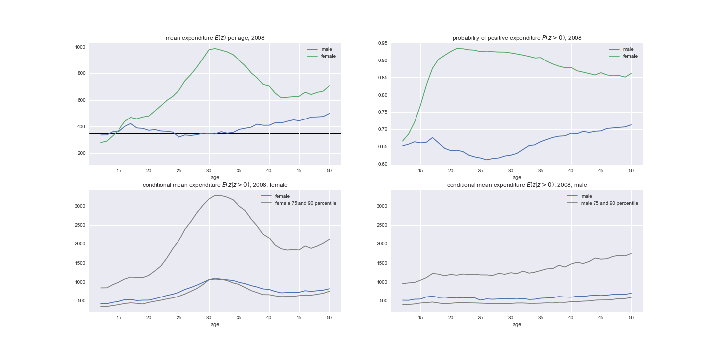
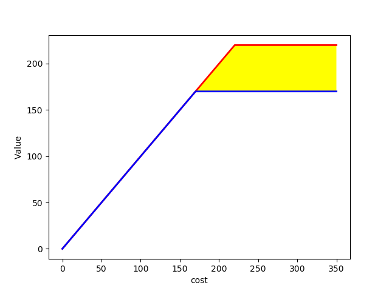
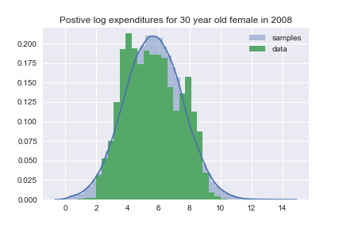
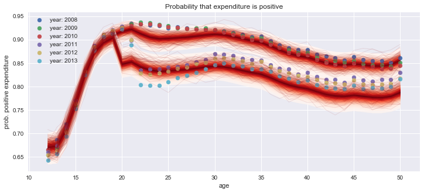
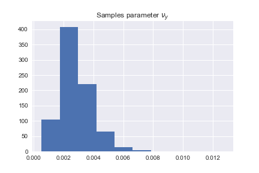
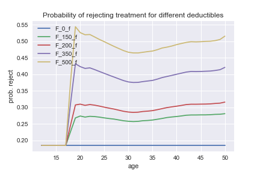
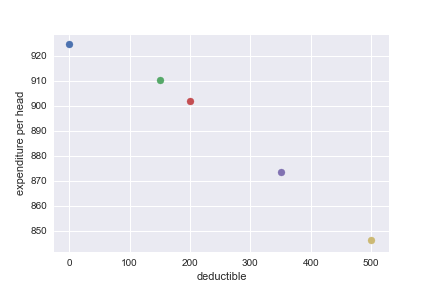
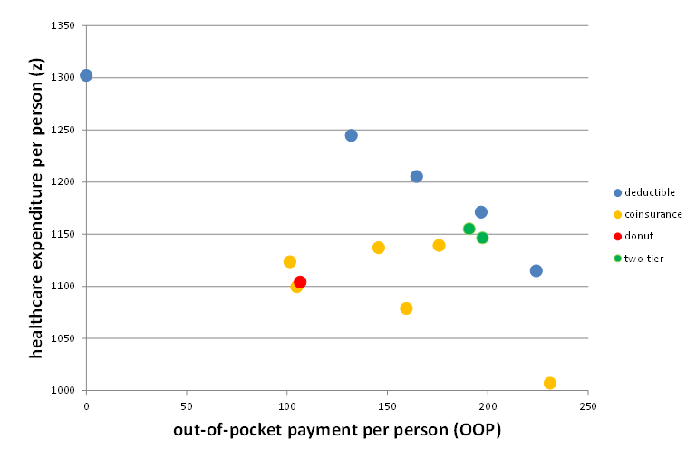

Health Care Expenditures
Jan Boone, Minke Remmerswaal, and Bram Wouterse
Table of Contents
Introduction
Motivation
- Dutch ministry of health worries about the level and growth of healthcare expenditures in basic insurance
- one instrument to contain expenditures is demand side cost sharing
- currently we have a mandatory deductible in the Netherlands (385 euroes)
- trade off demand side cost-sharing:
- lower expenditures
- higher out-of-pocket for people with low health status
- can we find a form of demand side cost sharing which alleviates this trade off?
forms of cost sharing
- popular with Dutch policy makers:
- deductible
- co-payment (say 25%)
- "donut"
- CPB is supposed to "predict" healthcare expenditures under different schemes
Research question
- what are the effects of different cost-sharing schemes on healthcare spending?
- difficulty: after the reform, the Netherlands has only featured deductible (like) cost sharing
- so we can estimate an equation like \(y_{it} = ... + \alpha D_t + \varepsilon_{it}\)
- but this equation cannot determine the effect of a 25% co-payment
Method
- use Bayesian estimation techniques to determine distributions of healtcare costs (per age-gender category)
- determine (expected) out-of-pocket payment (OOP) for each category
- determine the effect of the OOP on healthcare expenditures
- then for each scheme we determine the OOP and then expenditures
Why Bayesian?
- distributions of healthcare spending are important for cost-sharing schemes
- "standard" econometrics is based on sampling variation
- but we have data on the whole population
- we want policy recommendations like:
- there is 60% probability that a deductible of 500 euro reduces expenditures by at least 10% (compared to 350 euro)
- Bayesian approach can easily work with distributions
- it is fun!
Distributions

Literature
Modeling healthcare expenditures
- Einav et al. (2013)
- Hayen et al. (2019)
- Remmerswaal et al. (2019)
Model
The model
- one treatment per period; combination of cost and value
- two different deductibles

Total healthcare expenditure in a year
- \(H(z)\): distribution of healthcare expenditure in a year
- where \(z=x+y\)
- \(x\): exogenous, not affected by cost-sharing, high-value care
- if you break your leg, you get "plastered up"
- \(y\): endogenous, affected by cost-sharing
- if you have a running injury, perhaps you skip the physiotherapy
Idea of the model
- "at the start of the year", person \(i\) is offered one \(y\) treatment with value \(v_y\) and expected out-of-pocket \(OOP\)
- \(i\) accepts if \(v_y\) exceeds expected \(OOP\)
- \(OOP\) depends on:
- \(f(x)\) ex-ante distribution of exogenous healthcare expenditure
- \(g(y)\) cost distribution of offered treatment \(y\)
- cost-sharing scheme
- for a deductible \(D\), \(OOP\) equals \(\int_0^{+\infty} \int_0^{+\infty} (\min\{x+y,D\}-\min\{x,D\})f(x)g(y)dxdy\)
Data
Dutch healthcare expenditure
- expenditures per individual for six years: 2008-2013
- currently we use indiv.'s age and gender
- later we will add income, indicators for health status
- expenditures are for basic insurance under the deductible (e.g. not GP)
- basic insurance is mandatory in the Netherlands
- coverage is set by the government
- we ignore people with voluntary deductible (for the moment)
- we focus on ages 12-50
- deductible "kicks in" at 18
Estimation
Parametric specification
- "everybody knows" that healthcare expenditures are log-normally distributed:
- log transformation of positive healthcare costs are normally distributed
- we model the propability of zero healthcare costs
- benefits of log-normal distribution:
- analytical expression for \(OOP\) with deductible (estimation)
- analytical expression for distribution of \(x+y\)
Two distributions

Figure 3: Illustrative distributions for positive healthcare costs (left in levels, right in logs)
Four components
- define categories age by gender (current model: \(38*2\))
- each category has a distribution of (log) healthcare costs \(z\)
- distribution is mixture of 4 components:
- \(x \sim N(\mu_x,\Sigma_x)\), given gender a Gaussian Process with age; year fixed effects
- same for \(y\)
- \(\psi\) is probability treatment is offered (\(x > 0\)), GP with age
- \(\phi\) is same for \(y > 0\)
- people in each category know their \(\psi,\phi\) and their distributions of \(x,y\)
- calculate \(OOP\) per age, gender, year with \(x,y,\psi,D\)
- compute probability \(F\) that \(y\) is rejected (\(v_y < OOP\))
- we experiment with different functional forms for \(F(OOP)\)
- here we report outcomes with \(F(OOP) = 1-\zeta_y e^{-\nu_y*OOP}\)
Probabilities
- calculate probability for each mixture component
| component | probability |
| \(x=y=0\) | \((1-\psi)(1-\phi + \phi F)\) |
| \(x>0=y\) | \(\psi*(1-\phi + \phi F)\) |
| \(y>0=x\) | \((1-\psi)\phi(1-F)\) |
| \(x,y>0\) | \(\psi \phi (1-F)\) |
Technique
- specify priors for parameters:
- 5,000,000 observations per year
- on average 65,000 observations per category per year
- estimation with variational inference (ADVI, Auto-diff Variational Inference) and minibatches
- standard Markov Chain Monte Carlo methods (Metropolis, NUTS etc.) do not scale well with data size
- python and pymc3 fun to work with
- parameter \(\phi\) has age fixed effects:
ϕ[age]
- parameter \(\phi\) has age fixed effects:
- for each age-gender category, we draw 10,000 samples of the model parameters
- for each sample we draw one \(x,y\) and \(z\)
- that is, we draw outcomes (not averages or expectations)
Outcome
- the model yields a posterior distribution
- parameters \(\theta\)
- data \(y\)
- posterior:
\begin{equation}
Pr(\theta|y) = \frac{Pr(y|\theta)Pr(\theta)}{Pr(y)} = \frac{Pr(y|\theta)Pr(\theta)}{\int Pr(y|\theta)Pr(\theta)d\theta }
\end{equation}
- we simulate this posterior ("samples")
- for each sample, we generate an outcome (i.e. expenditure level)
Fit
How to measure fit
- not obvious how to measure the fit of the model
- we can compare:
- average expenditure per age-gender category (fit vs observed)
- expenditure distributions per age-gender categories
- predicted vs realized zero-expenditures per category
Fit on average costs by age, year and sex
Left panel: women, right panel: men
Expenditure distributions

Probability positive expenditures

Simulations
Samples
- we use \(F(OOP) = 1-\zeta_y e^{-\nu_y OOP}\)

Probability of rejecting

Deductible (women)

Comparing different schemes

Conclusion
Summary
- in order to determine healthcare expenditures under different cost sharing schemes:
- we estimated the distributions of healthcare expenditures
- split expenditures up in exogenous and endogenous expenditures
- determined expected OOP for endogenous expenditures under different schemes
- estimate the value distribution of these endog. expenditures
- the higher OOP, the more likely an (endogenous) treatment is rejected
- allows us to simulate effects of different schemes